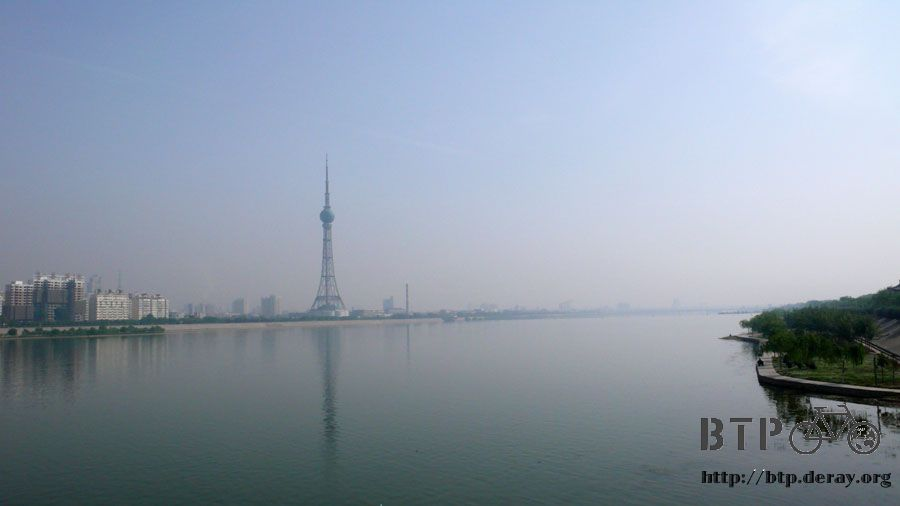
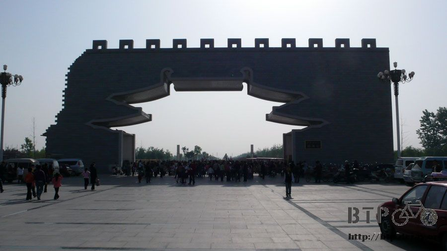
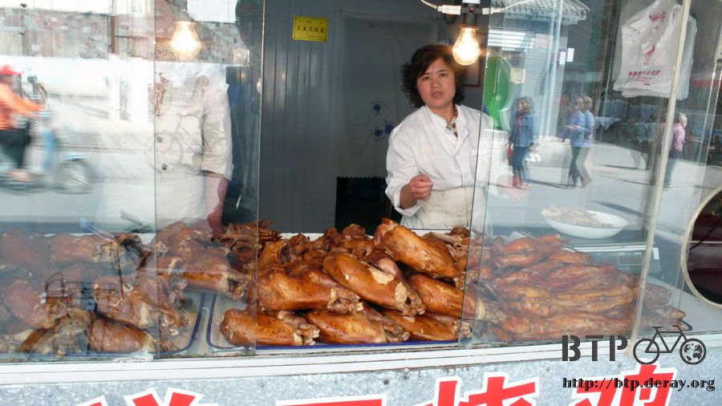
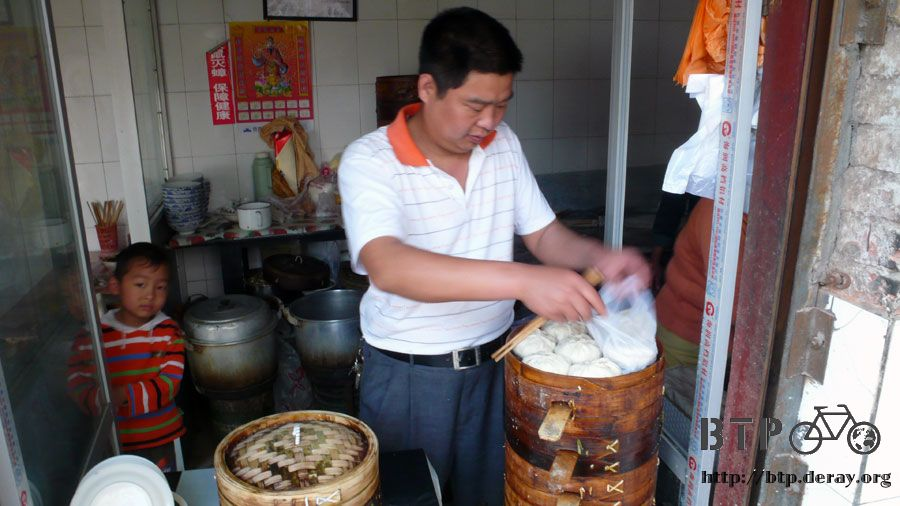
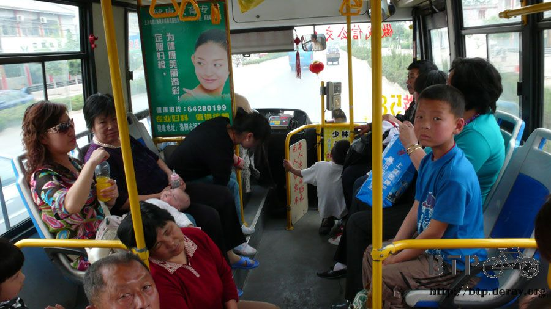
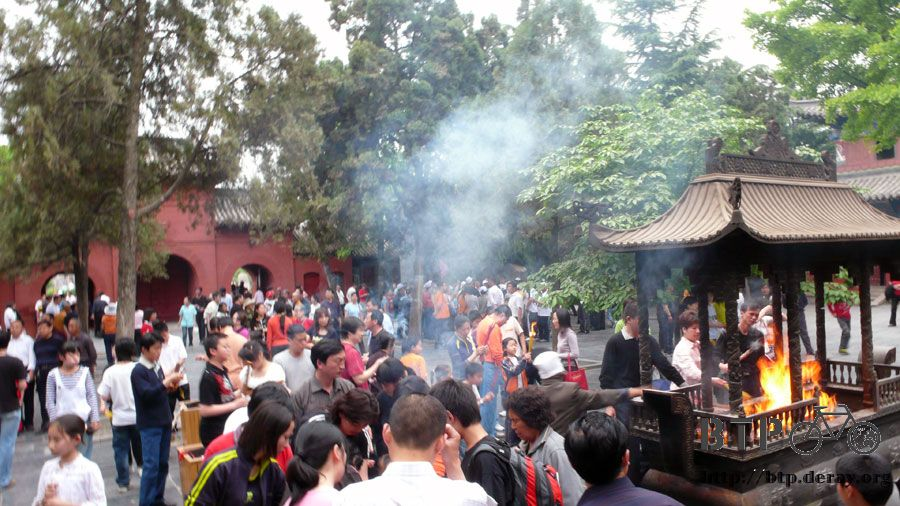
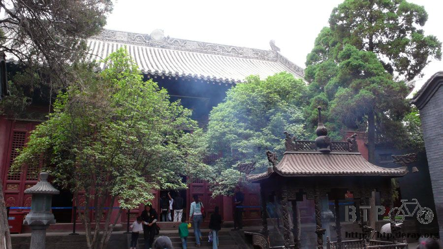
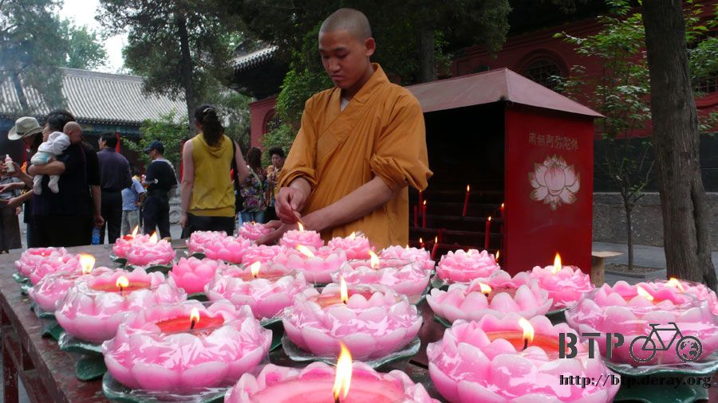

九朝古都巡禮
散步在清晨的洛陽街道，早餐店出乎意料的少，胡亂走著，終於看到一間飄著蒸氣的早餐店，
點了一碗老闆娘說是甜的八寶粥，結果喝起來一點都不甜~_~-而且還不給加糖。
另外看到蒸籠裡包子香噴噴的樣子，問了問價錢，一個四毛，
一口氣拿一籠給我，裡面有十個，問我吃不吃的完？
誰那麼厲害一大清早可以吃下十個肉包子=..=
所以就吃五個肉包子，配一碗不甜的八寶粥，早餐兩塊五。
吃飽後騎著小多，如旅社人員說的，去書報攤買一張洛陽地圖，一張兩塊錢，還真有點貴，因為只是一張紙而已。

先請老闆把我現在的所在地做個記號，以免到時候亂晃亂晃的，要是找不回旅館的路就糗了。
再問了一下洛陽古城怎麼走？
原來古城已經變成『隋唐城遺址植物園』了。
洛陽又被稱為九朝古都，因為有歷史記載的部分，就有『夏、商、東周、東漢、曹魏、西晉、北魏、隋、唐』
等十三個朝代以洛陽當作首都，是中國有史以來最早、朝代最多、歷史最長共計1529年的首都城市。
過了一座大橋－洛陽橋，橋下是洛河。


很順利的依照地圖找到古城的入口，是免費入場呢！
正高興準備要進去的時候，就被很不客氣的工作人員給攔了下來，說自行車不能進去，要停在外邊。
唉，車在人在，怎麼可能把小多停在這裡，自己跑進去參觀呢。
既然這樣那就到過門口就算來過了吧。

上午就騎著小多在市區亂跑，這邊的公車很多而且很發達，
都市景觀佈置的植物種的也是綠意盎然，有一種台北市大安區的感覺。

閒晃到十點半，本來想直接騎去白馬寺，畢竟是一個蠻值得一遊的地方，
但要是那邊也禁止自行車進去的話，那我又只能到過門口就算來過，有點可惜。
所以打算下午用搭公車的方式過去，以免白跑一趟。

看到一個很可愛的小女孩被媽媽反過來載，其實這樣很恐怖的，有玩過反著坐摩托車被載的人就知道~_~

路上有很多老伯在會在街邊樹下涼快的地方下象棋，棋子很大一顆，而且圍觀的人大多很多。
這邊可沒有什麼『觀棋不語』這回事，每個觀戰的人意見都很多，而且超級激動的。
戰術指導，或是直接開罵下的很爛的那一步棋，都是毫不客氣的明著來，因為『起手無回』這個規則還是存在的。

回旅館之前買了一斤的燒雞(15塊)，光是看我就口水直流呀:P
同一家店還有賣麻辣兔肉，但是我沒種吃兔寶寶/_\

光吃燒雞好像很奇怪，所以我又去早上那一間早餐店買了素的包子回來配，
素的包子跟肉的包子一樣都是一個四毛錢，但是尺寸明顯大上很多。
一個蒸籠可以一口氣蒸十個肉包子還顯得空，但是只能放的下塞的滿滿的七個素包子。

回旅館開心的吃著自己張羅來的午餐，睡個午覺下午還能繼續悠哉呢～
睡到下午兩點，拎著一瓶百事可樂，搭著58路的公車(在這邊叫做『公交』)，單趟車資1.5元，往白馬寺前進。
洛陽的公車，到站之後會報站名，所以很難迷路。
搭車除了可以投現金之後，也可以刷類似悠遊卡的東西，誰還能說中國落後呢？

車程大約半小時左右就到了，寺的周邊全部都是商家，招牌很一致的都是黑底黃字，
雖然都是商家，但規劃的很好，所以不會很亂。
而且垃圾桶和負責清掃的人出乎意料的多，這邊的環境很乾淨，感覺更令人喜歡。

買了一張35元的門票，這裡果然不能騎腳踏車進去，好加在我是搭公車來的～(呼)

還在外面的時候，就已經是一堆的觀光客，一進到裡面更不得了，全部都是慕名而來的遊客。
白馬寺是佛教傳入中國之後，在中國所建的第一座寺廟，其所代表的意義，
對於虔誠佛教的信徒來說，這裡應該算是一生非來一次不可的地方吧。

香火鼎盛到香不是用慢慢燻的，而是一大把一大把的大火燒。
整個爐裡都是旺盛的香火。

只要團體的人數夠多的話，還可以申請寺院的師傅來講解。
因為我只有一個人，所以就躲在別人的團體裡，跟著聽師父講解白馬寺的故事。

原來在很久很久以前，有人夢到西邊在打雷還是什麼的，得到這個徵兆之後，就往西邊走。
結果在阿富汗遇到兩個印度來的高僧，就請他們到中國來傳道並且翻譯經書。
並且為這兩位高僧蓋了這座寺廟，而這些經書都是由白馬所千里迢迢搬運來的，為了紀念白馬的辛苦，所以取名為白馬寺。

這個取經的故事，乍聽之下沒什麼，但是他的取經歷史，比唐三藏還早了五百六十多年，在東漢的時候就已經將經書取回來了。

為我們講解的師傅法號是『妙天』(跟台灣那個騙人的一樣名字~_~)
他小時候先在少林寺磨練，然後去過相國寺，現在則待在白馬寺。
白馬寺一共有一百多位師傅在學此學佛，希望能脫離人世間輪迴的痛苦。

師傅問我是哪來的，我第一次很老實的說出自己是從台灣來的，沒有隱瞞。
師父知道我在騎自行車旅行之後，問我在洛陽住哪呀？
因為他可以幫我安排，讓我住在白馬寺內，而且是免費的:D
可惜我明天就要離開洛陽了，不然要是有機會可以到白馬寺住，一大清早跟著師父們一起做早課。
唸著經文，然後在鐘樓敲108下的鐘響和鼓響，表示人世間的108種誘惑都被消除了。

白馬寺可不只有一間廟而已，經過不斷的擴建，裡面有很多的殿，像是大雄殿、主殿、佛殿等等。
大雄殿裡供俸的竟然是從春秋之後就已經失傳的棉麻刷漆工法所製作的佛像。
因為是超珍貴的國寶，在裡面連個燈都不能開，遊客只能從外面看，無法開放進去參觀。
師傅還講到說釋迦摩尼在講道的時候，一定都會帶著一個叫做『阿難』的弟子。
為什麼非帶著他不可呢？
因為阿難的記性超好，能記下釋迦摩尼說的每句話，現在我們看到的很多經書，
都是阿難聽完之後，再用手寫整理出來流傳給後世的，讓我們感謝這個記性很好的阿難m(_ _)m
還說他講道的時候隨行也會攜帶兩個女生在旁邊，當講道講到精彩的地方，
這兩個仙女就會騰空飛起，然後灑下一朵花，這也就是天女散花的由來。
不知道為什麼我聽到這個故事的時候，直覺都想到阿珠和阿花~_~
聽師父介紹寺裡的種種，感覺很新奇也很有趣，坐在寺裡的屋簷下，喝著免費的熱茶，
還真有一種會讓人想要出家脫離塵世的感覺。

寺廟的兩旁有兩座墓，裡面是好幾千年的老和尚的舍利子，猜想該不會就是那兩個在阿富汗被堵到的印度僧人吧？

墓的兩旁種了很多竹子，還有氣味芬芳的竹蓮花，相當的漂亮～

意猶未盡的參觀了兩個小時，這次的35元門票花的很值得，若是對佛教有興趣的人，到這邊來應該會很感動吧。
我就有看到好幾位，一開始就一直磕頭，從第一尊觀音，拜到最後一尊釋迦摩尼的虔誠大嬸。
回市區後，晚餐就吃中午買的素包子，在洛陽的一天很快的就結束了。
明天要繼續往西安騎，順利的話，兩～三天就可以到了。
繼續閱讀：5.3 五毛錢的快樂
中國-人民幣－ 1：4.3 台幣
5.2 |
總計：78.5元 |
早餐八寶粥＋肉包子五個2.5元、洛陽地圖2元、午餐燒雞一斤15元、素包子五個2元、白馬寺門票35元、58路公車往返車資3元、汽水2.5元、網吧一小時1.5元、住店15元 |
|